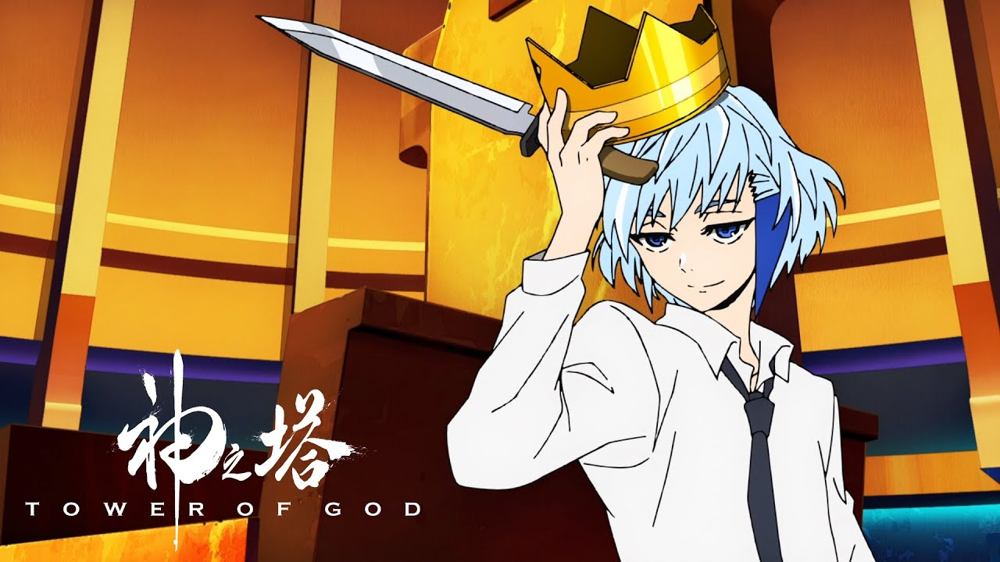

Khun
História: Khun é um dos membros mais inteligentes e astutos do grupo de Baam. Vindo de uma família nobre e poderosa, Khun é inicialmente um aliado de Baam, ajudando-o em sua jornada pela Torre. No entanto, seu passado complicado e sua lealdade a sua própria família tornam-no um personagem multifacetado.
Poderes: Khun é um mestre da estratégia e usa sua inteligência para manipular situações a seu favor. Ele é habilidoso no combate, além de possuir habilidades de manipulação de "Shinsu", o poder que flui na Torre.
Papel no Anime: Khun é um dos principais aliados de Baam, sempre ajudando a proteger o protagonista com suas habilidades e inteligência. Ele possui uma lealdade um tanto conturbada, especialmente em relação à sua família, mas é crucial para a jornada de Baam pela Torre.
Voltar à galeria